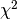

sklearn.datasets.make_gaussian_quantiles¶
-
sklearn.datasets.make_gaussian_quantiles(mean=None, cov=1.0, n_samples=100, n_features=2, n_classes=3, shuffle=True, random_state=None)[source]¶ Generate isotropic Gaussian and label samples by quantile
This classification dataset is constructed by taking a multi-dimensional standard normal distribution and defining classes separated by nested concentric multi-dimensional spheres such that roughly equal numbers of samples are in each class (quantiles of the  distribution).
Read more in the User Guide.
Parameters: mean : array of shape [n_features], optional (default=None)
The mean of the multi-dimensional normal distribution. If None then use the origin (0, 0, ...).
cov : float, optional (default=1.)
The covariance matrix will be this value times the unit matrix. This dataset only produces symmetric normal distributions.
n_samples : int, optional (default=100)
The total number of points equally divided among classes.
n_features : int, optional (default=2)
The number of features for each sample.
n_classes : int, optional (default=3)
The number of classes
shuffle : boolean, optional (default=True)
Shuffle the samples.
random_state : int, RandomState instance or None, optional (default=None)
If int, random_state is the seed used by the random number generator; If RandomState instance, random_state is the random number generator; If None, the random number generator is the RandomState instance used by np.random.
Returns: X : array of shape [n_samples, n_features]
The generated samples.
y : array of shape [n_samples]
The integer labels for quantile membership of each sample.
Notes
The dataset is from Zhu et al [1].
References
[R119] - Zhu, H. Zou, S. Rosset, T. Hastie, “Multi-class AdaBoost”, 2009.